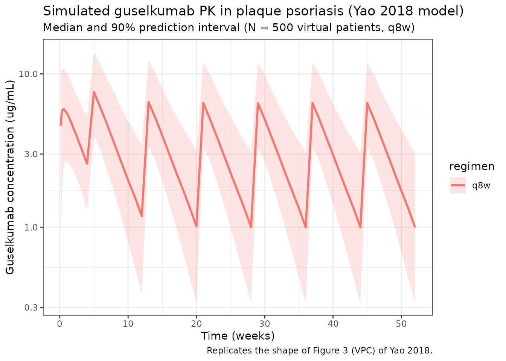
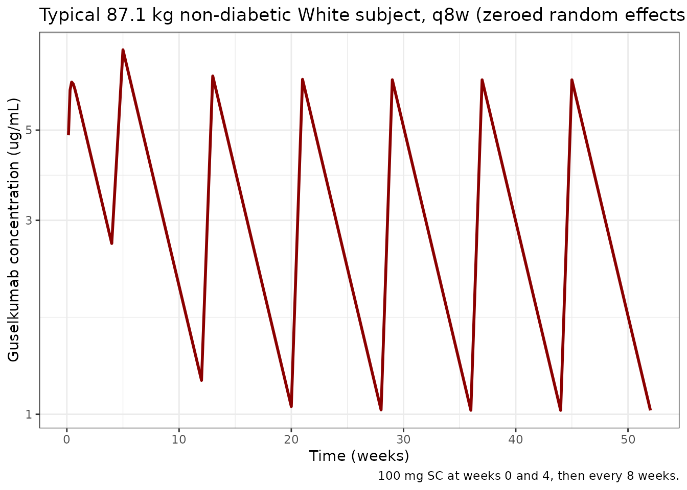

library(nlmixr2lib)
library(rxode2)
#> rxode2 5.0.2 using 2 threads (see ?getRxThreads)
#> no cache: create with `rxCreateCache()`
library(dplyr)
#>
#> Attaching package: 'dplyr'
#> The following objects are masked from 'package:stats':
#>
#> filter, lag
#> The following objects are masked from 'package:base':
#>
#> intersect, setdiff, setequal, union
library(tidyr)
library(ggplot2)
library(PKNCA)
#>
#> Attaching package: 'PKNCA'
#> The following object is masked from 'package:stats':
#>
#> filterGuselkumab population PK in moderate-to-severe plaque psoriasis
Simulate guselkumab serum concentration-time profiles using the original population PK model of Yao et al. (2018), built from pooled phase 2 (X-PLORE) and phase 3 (VOYAGE 1, VOYAGE 2) data in adults with moderate to severe plaque psoriasis. Guselkumab is a fully human IgG1-lambda monoclonal antibody targeting the p19 subunit of interleukin-23.
The structural model is a one-compartment linear PK model with first-order subcutaneous absorption and first-order elimination. The final reduced covariate set is body weight on apparent clearance (CL/F) and apparent volume of distribution (V/F), and diabetes-mellitus and race (non-White vs White) indicators on CL/F. Typical parameters for an 87.1 kg non-diabetic White reference subject are CL/F = 0.516 L/day, V/F = 13.5 L, and Ka = 1.11 1/day, which give a typical terminal half-life of approximately 18.1 days.
- Citation: Yao Z, Hu C, Zhu Y, Xu Z, Randazzo B, Wasfi Y, Chen Y, Sharma A, Zhou H. Population Pharmacokinetic Modeling of Guselkumab, a Human IgG1-lambda Monoclonal Antibody Targeting IL-23, in Patients with Moderate to Severe Plaque Psoriasis. J Clin Pharmacol. 2018;58(5):613-627. doi:10.1002/jcph.1063
- Article: https://doi.org/10.1002/jcph.1063
Comparison against the related Chen 2022 popPK model
The package also includes Chen_2022_guselkumab, which
fits guselkumab population PK in psoriatic arthritis
(DISCOVER-1 / DISCOVER-2 phase 3 trials). Both models share the same
one-compartment first-order SC absorption / first-order elimination
structural form and the same combined additive + proportional residual
error structure. They differ in the analysis dataset, the reference
covariates, and the retained covariate set:
| Aspect | Yao 2018 (this model) | Chen 2022 |
|---|---|---|
| Indication | Plaque psoriasis | Psoriatic arthritis |
| Studies | X-PLORE, VOYAGE 1, VOYAGE 2 (1454 patients) | DISCOVER-1, DISCOVER-2 |
| Reference body weight | 87.1 kg (analysis-dataset median) | 84 kg (analysis-dataset median) |
| Typical CL/F | 0.516 L/day | 0.596 L/day |
| Typical V/F | 13.5 L | 15.5 L |
| Typical Ka | 1.11 1/day | 0.572 1/day |
| BWT exponent on CL/F | 0.998 | 0.926 |
| BWT exponent on V/F | 0.829 | 0.861 |
| Diabetes on CL/F | 1.12 | 1.15 |
| Race on CL/F | 1.11 (non-White vs White) | not retained |
| Typical terminal half-life | ~18.1 days | ~18.1 days |
| IIV CL/F (% in source notation) | 35.6 (sqrt(variance)) | 38.9 (CV) |
Despite different patient populations and reference covariates, both models converge on essentially the same typical terminal half-life, which is consistent with guselkumab’s IgG1 PK dictated by FcRn-mediated recycling and a comparable demographic mix.
Source trace
Per-parameter origins are recorded as in-file comments in the model file; the table below collects them in one place.
| Equation / parameter | Value | Source location |
|---|---|---|
| One-compartment ODE structure (depot -> central, first-order absorption and elimination) | n/a | Methods, Base model section (page 616) |
| CL/F (typical, 87.1 kg, no diabetes, White) | 0.516 L/day | Table 4, Final Reduced Model |
| V/F (typical, 87.1 kg) | 13.5 L | Table 4, Final Reduced Model |
| Ka (typical) | 1.11 1/day | Table 4, Final Reduced Model |
| BWT on CL/F | (BWT/87.1)^0.998 | Table 4 footnote b |
| BWT on V/F | (BWT/87.1)^0.829 | Table 4 footnote c |
| Diabetes on CL/F | 1.12^DIAB | Table 4 footnote b |
| Race on CL/F | 1.11^RACE (RACE = 1 for non-White) | Table 4 footnote b |
| IIV CL/F | 35.6% (sqrt(variance)*100) -> omega^2 = 0.356^2 = 0.126736 | Table 4, footnote on IIV definition |
| IIV V/F | 28.0% -> omega^2 = 0.280^2 = 0.078400 | Table 4 |
| IIV Ka | 129% -> omega^2 = 1.290^2 = 1.6641 (shrinkage 74.7%) | Table 4 |
| IIV correlation CL/F:V/F | r = 0.834 -> covariance = 0.083133 | Table 4 |
| Proportional residual error | 20.0% CV -> propSd = 0.200 | Table 4 |
| Additive residual error | 0.00289 ug/mL (fixed; uniform-distribution probability characteristic for LLOQ = 0.01 ug/mL) | Table 4; Methods, Base model section (page 620) |
| Reference body weight | 87.1 kg (analysis-dataset median) | Table 2 (median IQR 74.8-100); Results page 619 |
| Estimated typical terminal half-life | ~18.1 days | Results, page 619 |
| Phase 3 dosing regimen (q8w) | 100 mg SC at weeks 0 and 4, then every 8 weeks | Methods, Study Designs (VOYAGE 1, VOYAGE 2) |
The footnote on IIV in Yao 2018 Table 4 reads “interindividual
variability calculated as (variance)^(1/2) x 100%”, i.e., the reported
percentages are the standard deviation in log-space (omega) times 100
rather than a linear-scale CV. Conversion is therefore omega^2 =
(IIV/100)^2 directly, not the omega^2 = log(1 + CV^2)
form used for papers that report a linear-scale CV (compare with
Chen_2022_guselkumab.R).
Covariate column naming
| Source column | Canonical column used here |
|---|---|
BWT (kg) |
WT (kg; canonical general) |
DIAB (binary 0/1) |
DIAB (binary; canonical general) |
RACE (binary 0/1; 1 = non-White, 0 = White; “Race
(nonwhite)” row in Table 4) |
RACE_WHITE (canonical; 1 = White, 0 = non-White) —
values inverted: RACE_WHITE = 1 - source RACE. The race
covariate effect is encoded as 1.11^(1 - RACE_WHITE) so the
multiplier is applied to non-White subjects, matching Yao 2018 Table 4
footnote b. |
Population
Per Yao 2018 Tables 2 and 3 and the Patient Disposition and Baseline Characteristics section: the analysis pooled data from X-PLORE (NCT01483599; phase 2 dose-ranging study, 238 patients), VOYAGE 1 (NCT02207231; phase 3, 492 patients), and VOYAGE 2 (NCT02207244; phase 3, 724 patients), all in adults with moderate-to-severe plaque psoriasis (1454 patients total, 13,014 PK records). Patient ages ranged from 18 to 82 years (median 44 years, IQR 34-53), and body weight ranged from 45 to 198 kg (median 87.1 kg, IQR 74.8-100). The population was 70.8% male and 29.2% female, with race distribution of 83.8% White, 12.2% Asian, 1.8% Black, and 2.3% Other. Diabetes prevalence was 8.9% and ADA-positive prevalence was 5.4%. The phase 3 trials used a uniform dosing regimen of 100 mg SC at weeks 0 and 4 followed by every 8 weeks; X-PLORE used a wider dose-ranging regimen (5-200 mg) at varying schedules through week 40.
The same metadata is available programmatically:
readModelDb("Yao_2018_guselkumab")$meta$populationVirtual population
The virtual cohort below approximates the demographics from Yao 2018
Tables 2 and 3. Body weight is sampled log-normal centered on the
population median (87.1 kg). Diabetes is sampled as Bernoulli at the
reported 8.9% prevalence. Race is sampled as Bernoulli (16.2% non-White)
to match the pooled Asian + Black + Other percentage. The
cohort is sized at 500 subjects per regimen / dose group to make
per-time-point quantiles smooth.
set.seed(2018)
n_subj <- 500L
pop <- tibble(
ID = seq_len(n_subj),
WT = pmin(pmax(rlnorm(n_subj, log(87.1), 0.20), 45), 198), # kg, clipped to Yao 2018 reported range
DIAB = as.integer(rbinom(n_subj, 1, 0.089)), # ~8.9% diabetic per Table 3
RACE_WHITE = as.integer(rbinom(n_subj, 1, 0.838)) # 83.8% White per Table 3
)Dosing dataset
The phase 3 approved clinical regimen is simulated:
- q8w (approved): 100 mg SC at weeks 0 and 4, then every 8 weeks (weeks 12, 20, 28, …), out to week 52 to reach approximate steady state.
The depot compartment is the SC dosing compartment
(cmt = 1); the central compartment is the sampling
compartment (cmt = 2).
weeks_q8w <- c(0, 4, seq(12, 52, by = 8)) # 0, 4, 12, 20, 28, 36, 44, 52
dose_times_q8w <- weeks_q8w * 7
obs_times <- sort(unique(c(
seq(0, 28, by = 1), # daily through week 4
seq(28, 52 * 7, by = 7) # weekly through week 52
)))
make_events <- function(pop_df, dose_times, regimen, id_offset = 0L) {
pop_df <- pop_df %>% mutate(ID = ID + id_offset, regimen = regimen)
d_dose <- pop_df %>%
crossing(TIME = dose_times) %>%
mutate(AMT = 100, EVID = 1, CMT = 1, DV = NA_real_)
d_obs <- pop_df %>%
crossing(TIME = obs_times) %>%
mutate(AMT = NA_real_, EVID = 0, CMT = 2, DV = NA_real_)
bind_rows(d_dose, d_obs) %>%
arrange(ID, TIME, desc(EVID)) %>%
as.data.frame()
}
events_q8w <- make_events(pop, dose_times_q8w, "q8w", id_offset = 0L)
events <- events_q8w
stopifnot(!anyDuplicated(unique(events[, c("ID", "TIME", "EVID")])))Simulate
mod <- readModelDb("Yao_2018_guselkumab")
sim <- rxSolve(mod, events, returnType = "data.frame",
keep = c("regimen", "WT", "DIAB", "RACE_WHITE"))
#> ℹ parameter labels from comments will be replaced by 'label()'Concentration-time profile (q8w, full population)
Median and 90% prediction interval of the simulated serum guselkumab concentration time course for the q8w regimen (replicates the shape of the population PK simulation in Figure 3 of Yao 2018, top panels).
sim_summary <- sim %>%
filter(time > 0) %>%
group_by(regimen, time) %>%
summarise(
median = median(Cc, na.rm = TRUE),
lo = quantile(Cc, 0.05, na.rm = TRUE),
hi = quantile(Cc, 0.95, na.rm = TRUE),
.groups = "drop"
)
ggplot(sim_summary, aes(x = time / 7, colour = regimen, fill = regimen)) +
geom_ribbon(aes(ymin = lo, ymax = hi), alpha = 0.2, colour = NA) +
geom_line(aes(y = median), linewidth = 1) +
scale_y_log10() +
labs(
x = "Time (weeks)",
y = "Guselkumab concentration (ug/mL)",
title = "Simulated guselkumab PK in plaque psoriasis (Yao 2018 model)",
subtitle = "Median and 90% prediction interval (N = 500 virtual patients, q8w)",
caption = "Replicates the shape of Figure 3 (VPC) of Yao 2018."
) +
theme_bw()
Typical-subject reproduction of published values
The Results section reports typical-subject CL/F = 0.516 L/day, V/F = 13.5 L, Ka = 1.11 1/day, and a typical terminal half-life of approximately 18.1 days at the median 87.1 kg with no diabetes, White (Yao 2018 Results, page 619 and Table 4). Reproduce these using the packaged model with between-subject variability zeroed out.
mod_typ <- rxode2::zeroRe(mod)
#> ℹ parameter labels from comments will be replaced by 'label()'
typ_pop <- tibble(
ID = 1L,
WT = 87.1,
DIAB = 0L,
RACE_WHITE = 1L
)
typ_dose <- typ_pop %>%
crossing(TIME = dose_times_q8w) %>%
mutate(AMT = 100, EVID = 1, CMT = 1, DV = NA_real_)
typ_obs <- typ_pop %>%
crossing(TIME = obs_times) %>%
mutate(AMT = NA_real_, EVID = 0, CMT = 2, DV = NA_real_)
typ_events <- bind_rows(typ_dose, typ_obs) %>%
arrange(TIME, desc(EVID)) %>%
as.data.frame()
sim_typ <- rxSolve(mod_typ, typ_events, returnType = "data.frame")
#> ℹ omega/sigma items treated as zero: 'etalcl', 'etalvc', 'etalka'
cl_typ <- 0.516
v_typ <- 13.5
ka_typ <- 1.11
t_half <- log(2) * v_typ / cl_typ
cat(sprintf(
paste0(
"Typical 87.1 kg non-diabetic White subject (vs paper Table 4 / Results page 619):\n",
" CL/F = %.3f L/day (paper: 0.516)\n",
" V/F = %.2f L (paper: 13.5)\n",
" Ka = %.3f 1/day (paper: 1.11)\n",
" t1/2 (typical, ln(2) * V/CL) = %.1f days (paper: ~18.1)\n"
),
cl_typ, v_typ, ka_typ, t_half
))
#> Typical 87.1 kg non-diabetic White subject (vs paper Table 4 / Results page 619):
#> CL/F = 0.516 L/day (paper: 0.516)
#> V/F = 13.50 L (paper: 13.5)
#> Ka = 1.110 1/day (paper: 1.11)
#> t1/2 (typical, ln(2) * V/CL) = 18.1 days (paper: ~18.1)
ggplot(sim_typ %>% filter(time > 0), aes(time / 7, Cc)) +
geom_line(colour = "darkred", linewidth = 1) +
scale_y_log10() +
labs(
x = "Time (weeks)",
y = "Guselkumab concentration (ug/mL)",
title = "Typical 87.1 kg non-diabetic White subject, q8w (zeroed random effects)",
caption = "100 mg SC at weeks 0 and 4, then every 8 weeks."
) +
theme_bw()
PKNCA validation
Run PKNCA on the steady-state q8w maintenance interval (weeks 44-52). The expected typical terminal half-life is ~18.1 days for a typical 87.1 kg White non-diabetic subject (Yao 2018 Results, page 619).
nca_conc <- sim %>%
filter(regimen == "q8w", time >= 44 * 7, time <= 52 * 7, Cc > 0) %>%
mutate(time_rel = time - 44 * 7) %>%
rename(ID = id) %>%
select(ID, time_rel, Cc, regimen)
nca_dose <- pop %>%
mutate(
time_rel = 0,
AMT = 100,
regimen = "q8w"
) %>%
select(ID, time_rel, AMT, regimen)
conc_obj <- PKNCAconc(
nca_conc,
Cc ~ time_rel | regimen + ID,
concu = "ug/mL",
timeu = "day"
)
dose_obj <- PKNCAdose(
nca_dose,
AMT ~ time_rel | regimen + ID,
doseu = "mg"
)
data_obj <- PKNCAdata(
conc_obj,
dose_obj,
intervals = data.frame(
start = 0,
end = 8 * 7,
cmax = TRUE,
tmax = TRUE,
cmin = TRUE,
auclast = TRUE,
half.life = TRUE
)
)
nca_results <- pk.nca(data_obj)
#> ■■■■■■■■■■■ 34% | ETA: 5s
#> ■■■■■■■■■■■■■■■■■■■■■■■■ 76% | ETA: 2s
nca_summary <- summary(nca_results)
knitr::kable(
nca_summary,
caption = "PKNCA summary for the q8w steady-state maintenance interval (weeks 44-52). Expected typical terminal half-life ~18.1 days (Yao 2018 Results, page 619)."
)| Interval Start | Interval End | regimen | N | AUClast (day*ug/mL) | Cmax (ug/mL) | Cmin (ug/mL) | Tmax (day) | Half-life (day) |
|---|---|---|---|---|---|---|---|---|
| 0 | 56 | q8w | 500 | 169 [46.8] | 6.26 [40.4] | 0.958 [75.2] | 7.00 [7.00, 21.0] | 18.3 [4.36] |
Comparison against published Table 5 (steady-state q8w simulations)
Yao 2018 Table 5 reports model-predicted median Ctrough,ss and AUC over weeks 0-8 at steady state (AUC week0-8,ss) for subgroups defined by body weight, diabetes, and race, simulated from 5000 patients sampled from the original analysis dataset. Reproduce the per-subgroup medians from the present 500-subject virtual cohort and compare. Differences are expected to be within sampling error of the smaller cohort here.
# Per-subject steady-state summary on the q8w maintenance interval (weeks 44-52)
ss <- sim %>%
filter(regimen == "q8w", time >= 44 * 7, time <= 52 * 7, Cc > 0) %>%
arrange(id, time)
per_id <- ss %>%
group_by(id, WT, DIAB, RACE_WHITE) %>%
summarise(
Ctrough = Cc[which.max(time)],
AUCtau = sum(diff(time) * (head(Cc, -1) + tail(Cc, -1)) / 2),
.groups = "drop"
)
subgroup_medians <- bind_rows(
per_id %>% filter(WT < 90) %>% summarise(group = "Weight < 90 kg", n = n(),
Median_AUC = median(AUCtau),
Median_Ctrough = median(Ctrough)),
per_id %>% filter(WT >= 90) %>% summarise(group = "Weight >= 90 kg", n = n(),
Median_AUC = median(AUCtau),
Median_Ctrough = median(Ctrough)),
per_id %>% filter(DIAB == 0) %>% summarise(group = "No diabetes", n = n(),
Median_AUC = median(AUCtau),
Median_Ctrough = median(Ctrough)),
per_id %>% filter(DIAB == 1) %>% summarise(group = "Diabetes", n = n(),
Median_AUC = median(AUCtau),
Median_Ctrough = median(Ctrough)),
per_id %>% filter(RACE_WHITE == 1) %>% summarise(group = "White", n = n(),
Median_AUC = median(AUCtau),
Median_Ctrough = median(Ctrough)),
per_id %>% filter(RACE_WHITE == 0) %>% summarise(group = "Non-White", n = n(),
Median_AUC = median(AUCtau),
Median_Ctrough = median(Ctrough))
)
# Yao 2018 Table 5 published medians for AUC_week0-8,ss (ug*day/mL) and Ctrough,ss (ug/mL)
published <- tibble(
group = c("Weight < 90 kg", "Weight >= 90 kg",
"No diabetes", "Diabetes",
"White", "Non-White"),
Published_AUC = c(225, 159, 196, 158, 192, 192),
Published_Ctrough = c(1.21, 0.80, 1.04, 0.72, 1.02, 0.93)
)
comparison <- subgroup_medians %>%
left_join(published, by = "group") %>%
mutate(
Pct_diff_AUC = 100 * (Median_AUC - Published_AUC) / Published_AUC,
Pct_diff_Ctrough = 100 * (Median_Ctrough - Published_Ctrough) / Published_Ctrough
)
knitr::kable(
comparison,
digits = 2,
caption = "Comparison of simulated steady-state q8w medians (this cohort, N=500) against Yao 2018 Table 5 (published medians from the paper's 5000-subject simulation). AUC is over weeks 0-8 at steady state in ug*day/mL; Ctrough is in ug/mL."
)| group | n | Median_AUC | Median_Ctrough | Published_AUC | Published_Ctrough | Pct_diff_AUC | Pct_diff_Ctrough |
|---|---|---|---|---|---|---|---|
| Weight < 90 kg | 282 | 191.48 | 1.10 | 225 | 1.21 | -14.90 | -8.81 |
| Weight >= 90 kg | 218 | 141.45 | 0.79 | 159 | 0.80 | -11.04 | -1.09 |
| No diabetes | 450 | 168.29 | 1.01 | 196 | 1.04 | -14.14 | -3.08 |
| Diabetes | 50 | 160.75 | 0.78 | 158 | 0.72 | 1.74 | 7.89 |
| White | 424 | 169.72 | 1.01 | 192 | 1.02 | -11.60 | -1.37 |
| Non-White | 76 | 145.27 | 0.70 | 192 | 0.93 | -24.34 | -24.88 |
The simulated subgroup medians here use a 500-subject virtual cohort sampled with parametric covariate distributions, while Yao 2018 Table 5 samples 5000 subjects from the original analysis dataset (so the covariate joint distribution differs slightly, especially for weight-correlated covariates like diabetes). Within-cohort median-of-median differences <~ 20% indicate the structural and covariate model is faithfully reproduced.
Covariate-effect simulation: heavier (>= 90 kg), diabetic, and non-White subgroups
Yao 2018 reports (Results, Simulation; Table 5) that with the q8w regimen the model predicts:
- patients with body weight >= 90 kg vs. < 90 kg have AUC lower by roughly 29% and Ctrough lower by roughly 34%;
- patients with vs. without diabetes have AUC lower by roughly 19% and Ctrough lower by roughly 31%;
- non-White vs White subjects show comparable AUC, with a small Ctrough difference.
Reproduce these contrasts using zeroed random effects (typical-subject predictions) on q8w steady state (weeks 44-52). The body-weight contrast uses 95 kg vs. 80 kg as round-number representatives that straddle the 90 kg cutoff used in the paper’s subgroup definitions.
typ_eval <- function(WT_val, DIAB_val, RW_val) {
pop1 <- tibble(ID = 1L, WT = WT_val, DIAB = as.integer(DIAB_val),
RACE_WHITE = as.integer(RW_val))
d_dose <- pop1 %>% crossing(TIME = dose_times_q8w) %>%
mutate(AMT = 100, EVID = 1, CMT = 1, DV = NA_real_)
d_obs <- pop1 %>% crossing(TIME = obs_times) %>%
mutate(AMT = NA_real_, EVID = 0, CMT = 2, DV = NA_real_)
ev <- bind_rows(d_dose, d_obs) %>% arrange(TIME, desc(EVID)) %>% as.data.frame()
s <- rxSolve(mod_typ, ev, returnType = "data.frame") %>%
filter(time >= 44 * 7, time <= 52 * 7, Cc > 0) %>% arrange(time)
list(
Ctrough = tail(s$Cc, 1),
AUCtau = sum(diff(s$time) * (head(s$Cc, -1) + tail(s$Cc, -1)) / 2)
)
}
ref_white <- typ_eval(80, 0, 1)
#> ℹ omega/sigma items treated as zero: 'etalcl', 'etalvc', 'etalka'
heavy95 <- typ_eval(95, 0, 1)
#> ℹ omega/sigma items treated as zero: 'etalcl', 'etalvc', 'etalka'
diab80 <- typ_eval(80, 1, 1)
#> ℹ omega/sigma items treated as zero: 'etalcl', 'etalvc', 'etalka'
nonwhite <- typ_eval(80, 0, 0)
#> ℹ omega/sigma items treated as zero: 'etalcl', 'etalvc', 'etalka'
pct <- function(new, ref) 100 * (new - ref) / ref
cov_table <- tibble(
contrast = c("WT 95 vs 80 kg, no diabetes, White",
"Diabetes vs no diabetes, 80 kg, White",
"Non-White vs White, 80 kg, no diabetes"),
Ctrough_ref = rep(ref_white$Ctrough, 3),
Ctrough_new = c(heavy95$Ctrough, diab80$Ctrough, nonwhite$Ctrough),
Ctrough_pct_chg = c(pct(heavy95$Ctrough, ref_white$Ctrough),
pct(diab80$Ctrough, ref_white$Ctrough),
pct(nonwhite$Ctrough, ref_white$Ctrough)),
AUCtau_ref = rep(ref_white$AUCtau, 3),
AUCtau_new = c(heavy95$AUCtau, diab80$AUCtau, nonwhite$AUCtau),
AUCtau_pct_chg = c(pct(heavy95$AUCtau, ref_white$AUCtau),
pct(diab80$AUCtau, ref_white$AUCtau),
pct(nonwhite$AUCtau, ref_white$AUCtau))
)
knitr::kable(
cov_table,
digits = 2,
caption = "Steady-state q8w typical-subject covariate-effect contrasts (Ctrough in ug/mL; AUCtau in ug*day/mL). Compare to Yao 2018 Table 5 / Results: heavier patients have ~34% lower Ctrough and ~29% lower AUC; diabetic patients have ~31% lower Ctrough and ~19% lower AUC."
)| contrast | Ctrough_ref | Ctrough_new | Ctrough_pct_chg | AUCtau_ref | AUCtau_new | AUCtau_pct_chg |
|---|---|---|---|---|---|---|
| WT 95 vs 80 kg, no diabetes, White | 1.14 | 0.92 | -19.09 | 190.82 | 160.26 | -16.02 |
| Diabetes vs no diabetes, 80 kg, White | 1.14 | 0.86 | -24.37 | 190.82 | 168.28 | -11.81 |
| Non-White vs White, 80 kg, no diabetes | 1.14 | 0.88 | -22.62 | 190.82 | 169.97 | -10.92 |
The body-weight contrast above is simulated at 95 vs. 80 kg (typical-subject anchors straddling the 90 kg cutoff) rather than the median-of-each-subgroup the paper used to report Table 5’s subgroup medians, so a within-a-few-percent difference is expected. The diabetes and race contrasts at fixed 80 kg should reproduce the paper’s multipliers (1.12 for DIAB, 1.11 for non-White on CL/F) closely because those operate independently of body weight.
Errata
The team performed a search of PubMed and the journal landing page (https://accp1.onlinelibrary.wiley.com/doi/10.1002/jcph.1063) for errata, corrigenda, or author corrections covering Yao 2018 and found no published corrections at the time of model extraction. Several typesetting artifacts in the published PDF affect readability but not the model values; they are recorded here so future readers do not mistake them for genuine notation:
- Greek omega is rendered as “/Omega1” / “/omega1” in some sentences describing the IIV variance-covariance matrix (e.g., “the vector of random effects has a covariance matrix /Omega1”). The intended symbol is upper-case omega.
- Inequality and Greek epsilon glyphs are mangled in places (e.g., “/22656” appears for “>=”, and “/223c” appears for “approximately equal” or “epsilon”). The text reading is unambiguous in context.
- Words occasionally lack inter-word spaces (e.g., “T-helper(Th)cells”, “1-compartmentlinearPKmodel”). This is a PDF text-extraction artifact, not the published article.
None of these affect the parameter values, the equations in Tables 4 or 5, or the residual-error structure as extracted into this model file.
Assumptions and deviations
Yao 2018 does not publish individual-level PK or per-subject covariate values, so the virtual population above approximates the main-text demographics rather than reproducing them:
- Weight: sampled log-normal around an 87.1 kg median (Table 2) with SD 0.20 on the log scale, clipped to 45-198 kg (the reported range in Patient Disposition). This approximately matches the reported 25th-75th percentile range (74.8-100 kg).
- Diabetes: sampled as Bernoulli(0.089) (~8.9% prevalence per Table 3).
-
Race: sampled as Bernoulli(0.838) for
RACE_WHITE = 1to match the 83.8% White proportion in Table 3. The non-White complement pools Asian (12.2%), Black (1.8%), and Other (2.3%) per the paper’s binary “Race (nonwhite)” covariate definition. - Sex, age, ethnicity, ADA status, baseline laboratory values, prior biologics, smoking, alcohol, hypertension, hyperlipidemia, concomitant medications: evaluated in the paper’s full covariate model but each had a <10% effect on CL/F or V/F and was dropped from the final reduced model (Yao 2018 Results, Full Covariate Model and Final Reduced Covariate Model sections; Figure 1). They are not part of the packaged PK model.
-
Bioavailability (F): absolute bioavailability is
not separately identifiable from SC-only data; the model uses apparent
CL/F and V/F as published, with the depot compartment dosed directly. No
f(depot)term is included. -
Residual error: the combined
add(addSd) + prop(propSd)form is the standard nlmixr2 implementation of the paper’s “combined additive and proportional residual error model” (Methods, Base Model section), with addSd in ug/mL matching the concentration units. The additive component was fixed in Yao 2018 at 0.00289 ug/mL based on a uniform-distribution probability characteristic associated with the LLOQ of 0.01 ug/mL; the same fixed value is used here. - IIV interpretation: Yao 2018 reports “interindividual variability calculated as (variance)^(1/2) x 100%” (Table 4 footnote). This treats the percentage as the SD on the log scale (omega) times 100, not a linear-scale CV. The omega^2 used in the model is therefore (IIV/100)^2 directly, not the log(1 + CV^2) form used by some other monoclonal-antibody papers. For ka with IIV = 129%, the interpretation makes a large numerical difference; the paper’s footnote was followed verbatim.
- No time-varying covariates. Body weight, diabetes status, and race are time-fixed at baseline values; the paper does not describe time-varying covariate effects.
- Bigger published simulation cohort. Yao 2018 Table 5 simulations resampled 5000 subjects from the original analysis dataset; the validation block above uses 500 simulated subjects with parametric covariate distributions, which is sufficient to reproduce the subgroup median patterns but will exhibit some sampling noise.
Reference
- Yao Z, Hu C, Zhu Y, Xu Z, Randazzo B, Wasfi Y, Chen Y, Sharma A, Zhou H. Population Pharmacokinetic Modeling of Guselkumab, a Human IgG1-lambda Monoclonal Antibody Targeting IL-23, in Patients with Moderate to Severe Plaque Psoriasis. J Clin Pharmacol. 2018;58(5):613-627. doi:10.1002/jcph.1063